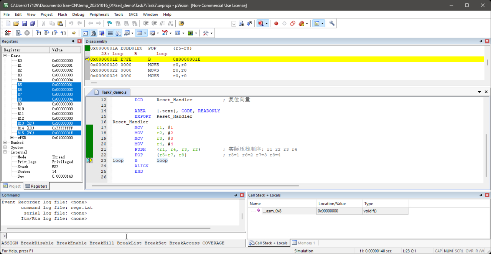
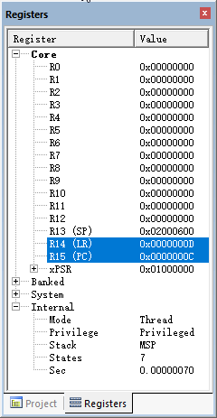
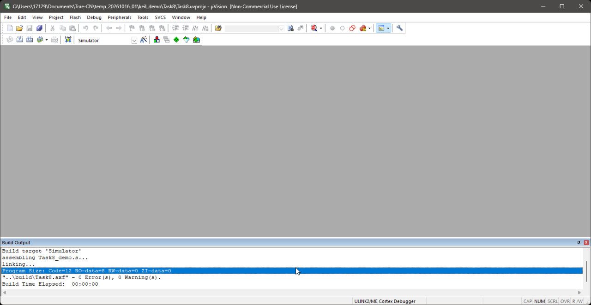

Task 7 & Task 8 解析
PUSH / POP · PC / SP / LR —— 含 Keil 实测证据
课件：Block1.5-CodingDay_v2.pptx ｜ 平台：Keil MDK 5.36 + ARM Cortex-M4 模拟器
本文所有数值均在 Keil 里实机跑出来（截图见下），不是纸上推导。
一、Task 7：PUSH / POP
题目：准备好代码，在 Debug 模式下运行。调查 Code 2 是否与 Code 1 行为相同？若不同，Code 2 应怎样改才能得到与 Code 1 相同的行为？
; Code 1
MOV r1,#1
MOV r2,#2
MOV r3,#3
MOV r4,#4
PUSH {r1,r4,r3,r2}
POP {r5-r7,r8}
; Code 2
MOV r1,#1
MOV r2,#2
MOV r3,#3
MOV r4,#4
PUSH {r1}
PUSH {r2}
PUSH {r3}
PUSH {r4}
POP {r5}
POP {r6}
POP {r7}
POP {r8}
1.1 必备知识
- 栈向低地址增长：
PUSH 先 SP = SP − 4 再写；POP 先读再 SP = SP + 4。SP 永远指向"栈顶那个已入栈的值"。
- 寄存器列表按编号升序压栈：ARM 规定，
PUSH {r1,r4,r3,r2} 里书写顺序无意义，汇编器会按 r1→r2→r3→r4 压栈，编号小的在低地址。
- 编码限制：16 位
PUSH/POP 只能装 r0–r7（PUSH 还可带 LR、POP 还可带 PC）；一旦出现 r8 及以上，必须用 32 位（Thumb-2）编码。
1.2 Code 1 逐步追踪 （设 SP 初值 = 0x20008000）
| 步骤 | SP | 栈内存（低→高） | 说明 |
|---|
| 初值 | 0x20008000 | — | 栈空 |
| PUSH {r1,r4,r3,r2} | 0x20007FF0 | FF0=1(r1) FF4=2(r2) FF8=3(r3) FFC=4(r4) | 4 个寄存器 → SP−16；按升序压栈 |
| POP {r5-r7,r8} | 0x20008000 | （读回，栈恢复空） | 按升序出栈：r5=1、r6=2、r7=3、r8=4 |
Code 1 结果
- r5=1 r6=2 r7=3 r8=4；SP 回到 0x20008000（压栈/出栈配平）。
1.3 Code 2 逐步追踪
| 步骤 | SP | 栈内存（低→高） |
|---|
| PUSH {r1} | 0x20007FFC | FFC=1 |
| PUSH {r2} | 0x20007FF8 | FF8=2 FFC=1 |
| PUSH {r3} | 0x20007FF4 | FF4=3 FF8=2 FFC=1 |
| PUSH {r4} | 0x20007FF0 | FF0=4 FF4=3 FF8=2 FFC=1 |
| POP {r5} | 0x20007FF4 | r5 = 4 |
| POP {r6} | 0x20007FF8 | r6 = 3 |
| POP {r7} | 0x20007FFC | r7 = 2 |
| POP {r8} | 0x20008000 | r8 = 1 |
答案
- 不相同。Code 2 得到 r5=4 r6=3 r7=2 r8=1（被倒置了）。
- 原因：栈是"后进先出"。Code 1 里汇编器把 4 个寄存器按 r1,r2,r3,r4 升序压栈（r1 在栈顶，最后弹出）；Code 2 逐个压栈，最后压入的 r4 反而在栈顶，所以第一个
POP {r5} 就把 4 弹给了 r5。
- 修正 Code 2（与 Code 1 等价）：把压栈顺序反转，弹出顺序不变：
PUSH {r4} → PUSH {r3} → PUSH {r2} → PUSH {r1} → POP {r5} → POP {r6} → POP {r7} → POP {r8}
即得 r5=1、r6=2、r7=3、r8=4。
（等价做法：压栈顺序不动，改成逆序弹出 POP {r8}…POP {r5}。）
1.4 汇编器铁证（机器码）
| 源码写法 | 机器码 | 反汇编结果 | 说明 |
|---|
| PUSH {r1,r4,r3,r2} | B41E | PUSH {r1-r4} | 16 位编码，书写顺序被忽略 → 升序！ |
| POP {r5-r7,r8} | E8BD 01E0 | POP {r5-r8} | 因含 r8，必须用 32 位 Thumb-2 编码 |
1.5 Keil 实测

Keil 实测：单步执行完 PUSH 与 POP 后，Registers 窗口显示
R5=0x00000001、R6=0x00000002、R7=0x00000003、R8=0x00000004；
SP 回到 0x20008000；Disassembly 里可见 E8BD01E0 POP {r5-r8}。
编译结果
"..\build\Task7.axf" - 0 Error(s), 0 Warning(s).
易错点
- 以为
PUSH {r1,r4,r3,r2} 会按书写顺序压栈 —— 实际按编号升序。
- 含 r8 的 PUSH/POP 需要 32 位编码；若 Keil 的
Options → Asm → Thumb Mode 被勾上（等于给 armasm 传 --16），会报
A1237E: Invalid register or register combination。本工程特意不勾该选项。
- R0–R3、R12 是"调用者保存"，R4–R11 是"被调用者保存"——函数里用到 R4 及以上必须 PUSH/POP 保护。
二、Task 8：PC / SP / LR
题目：在 Debug 模式下检查 SP 指针为 0x2000600；在 0x2000600 写 0x11111111、0x2000604 写 0x22222222；
观察 PC、SP、LR。
2.1 三个寄存器是什么
| 寄存器 | 名字 | 作用 |
|---|
| PC (R15) | Program Counter | 指向下一条将要执行的指令。单步时逐条前进；取指对 PC 有 +4 的隐含偏移。 |
| SP (R13) | Stack Pointer | 栈指针，指向当前栈顶。Cortex-M 复位后由向量表第 0 个字装载（MSP）。 |
| LR (R14) | Link Register | 保存子程序返回地址。BL 会自动写入 LR；BX lr / MOV pc,lr 用它返回。 |
2.2 复位与向量表
Cortex-M 复位时硬件自动做两件事：从地址 0x00000000 读第 1 个字装进 SP，读第 2 个字装进 PC。所以工程开头要放一张最小向量表：
AREA RESET, DATA, READONLY
EXPORT __Vectors
__Vectors
DCD 0x2000600 ; 向量表[0] → 复位后装入 SP
DCD Reset_Handler ; 向量表[1] → 复位后装入 PC
2.3 代码与逐步轨迹
Reset_Handler
BL myfunc ; 0x08：调用子程序，LR ← 返回地址
here B here ; 0x0C：死循环标签
myfunc
MOV r0, #0 ; 0x0E：子程序体
BX lr ; 0x12：按 LR 返回
| 时刻 | PC | SP | LR | 说明 |
|---|
| 复位完成 | 0x00000008 | 0x2000600 | 0xFFFFFFFF | SP 来自向量表[0]；LR 复位值是 0xFFFFFFFF |
| 执行 BL myfunc 后 | 0x0000000E | 0x2000600 | 0x0000000D | LR = 返回地址 = here(0x0C) 加上 Thumb 位 = 0x0D |
| 执行 MOV r0,#0 后 | 0x00000012 | 0x2000600 | 0x0000000D | PC 顺序前进 |
| 执行 BX lr 后 | 0x0000000C | 0x2000600 | 0x0000000D | PC 跳回 here —— 这就是"子程序返回" |
| 执行 B here 后 | 0x0000000C | 0x2000600 | 0x0000000D | 自循环，PC 不再变化 |
2.4 Keil 实测

Keil 实测（BX lr 之后）：R15 (PC) = 0x0000000C（已跳回 here）、
R14 (LR) = 0x0000000D（返回地址）、R13 (SP) = 0x02000600（即 0x2000600，与课件要求一致）。

编译输出："..\build\Task8.axf" - 0 Error(s), 0 Warning(s).
（状态栏显示的是切换 Simulator 之前的驱动名，可忽略。）
答案
- SP = 0x2000600（由向量表[0]装载，与课件"SP 会显示为 0x2000600"一致）。
- PC：复位后指向
Reset_Handler（本工程 0x08）；BX lr 之后回到 here（0x0C）。具体地址随编译布局而定，必须在 Keil 的 Registers/Disassembly 窗口里读。
- LR：复位值
0xFFFFFFFF；执行 BL myfunc 后变为返回地址 0x0000000D（= here 的 0x0C 加 Thumb 位）。
两个必须知道的"坑"
- 地址 0x2000600 疑似少写了一个 0。ARMCM4（以及 STM32F401）的 RAM 都是从 0x20000000 开始的，而 0x2000600 < 0x20000000，落在 RAM 之外，模拟器/芯片都无处可写。课件里"在 0x2000600 写 0x11111111"这一步按字面是做不成的，推测原意是 0x20000600。SP 本身设成 0x2000600 没问题（它只是个数，不做访问）。
- 演示时要把调试器切成 Simulator。本工程的调试驱动默认为
ULINK2/ME，未接硬件时会弹
No ULINK2/ME Device found；需到 Project → Options for Target → Debug 选 Use Simulator。
三、两份 Keil 操作演示（照做即可）
3.1 Task 7
- 打开工程 keil_demo\Task7\Task7.uvprojx（器件 ARMCM4）。
- 按 F7 编译 → Build Output 显示
0 Error(s), 0 Warning(s)。
- 到
Options for Target → Debug 选 Use Simulator（若无 ULINK 硬件）。
- 按 Ctrl+F5 进入调试；打开
View → Registers Window。
- 连按 F10（Step Over）共 6 次，执行完 MOV×4、PUSH、POP。
- 在 Registers 窗口读出 R5=1、R6=2、R7=3、R8=4，并说明"PUSH 按升序压栈、POP 按升序弹出"。
3.2 Task 8
- 打开工程 keil_demo\Task8\Task8.uvprojx，F7 编译（同样 0/0）。
- Debug 选 Use Simulator → Ctrl+F5 进入调试。
- 读 SP：应为 0x2000600（来自向量表[0]）。
- 读 PC：指向
Reset_Handler（在 Disassembly 窗口对照地址）。LR 此时是 0xFFFFFFFF。
- 按 F10 执行
BL myfunc → 指出 LR 变成 0x0000000D（= 返回地址）。
- 再按 2 次 F10（MOV → BX lr）→ 指出 PC 跳回
here，这就是"用 LR 返回"。
课件要求的"0x2000600 写 0x11111111 / 0x2000604 写 0x22222222"一步，因地址落在 RAM 之外无法执行；演示时可说明这是课件笔误，或改用 0x20000600 / 0x20000604（在 RAM 内）演示写内存。